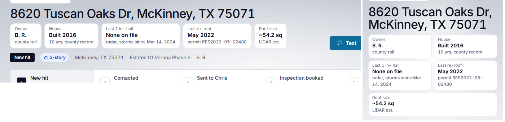
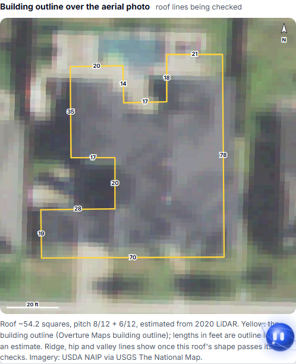
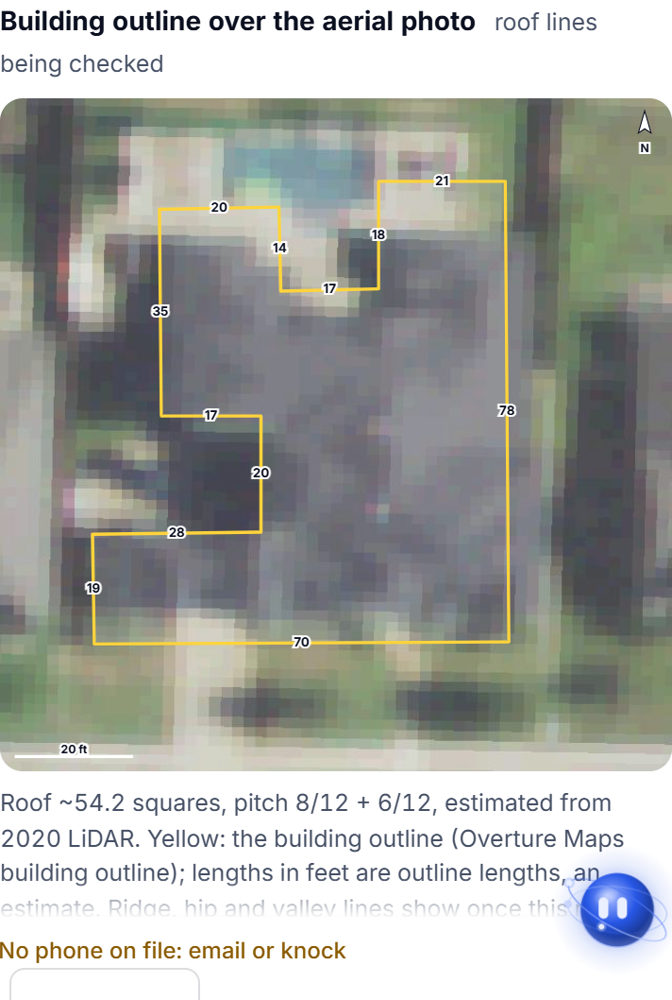

Jack 10-23: key facts first + LiDAR measurements
Key facts first
The record opens with owner (initials until messaged), house age, last 1 in+ hail at the house (radar), last re-roof permit and roof size (LiDAR est.). Desktop left, phone right.

LiDAR measurements, shape still being checked (most homes)
Building outline over the USDA NAIP photo, outline lengths in feet (estimate), LiDAR squares and pitch. No ridge, hip or valley lines until the shape passes.

LiDAR measurements, phone

LiDAR measurements, model passed its checks
Measured lines with lengths in feet and the pitch of each face.